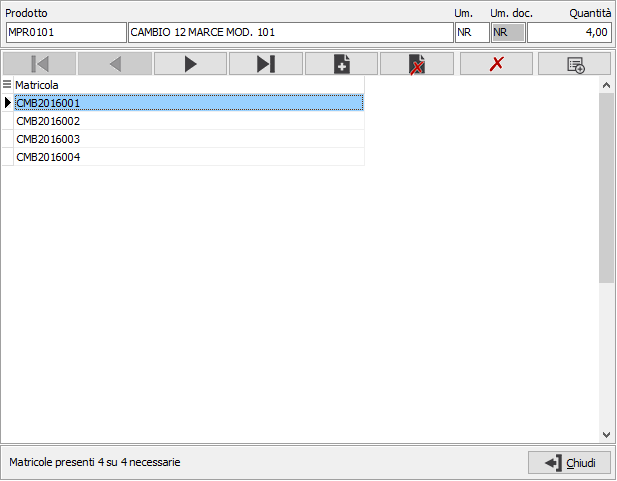
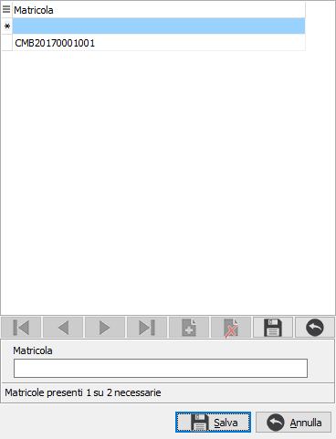
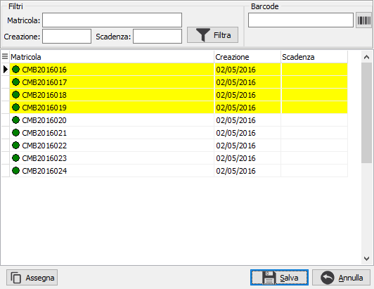
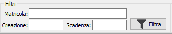
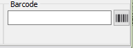
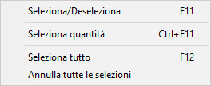

Gestione matricole singola riga
 Sulle righe di documenti
e movimenti è presente il pulsante Matricole che consente l’inserimento
dei codici matricola per i singoli prodotti; il pulsante è attivo sulle
righe già salvate, per i prodotti che gestiscono le matricole se la data
del documento non è antecedente alla data di inizio gestione specificata
in configurazione; laddove è presente il tipo rigo, perché il pulsante
Matricole sia attivo, è necessario che siano gestiti il prodotto e la
quantità, che la classe del rigo non sia di tipo annotazione e che non
si tratti di un rigo di tipo recupero spese. Se il prodotto gestisce un
dettaglio (variante, ubicazione o lotto) il pulsante presente sul rigo
non ha effetto anche se abilitato, sarà necessario accedere alla finestra
di dettaglio dove è presente lo stesso pulsante in corrispondenza del
singolo dettaglio; in caso di scomposizione di un dettaglio base il pulsante
Matricole è presente direttamente nella finestra di scomposizione in modo
da poter assegnare direttamente le matricole sui dettagli appena assegnati.
Sulle righe di documenti
e movimenti è presente il pulsante Matricole che consente l’inserimento
dei codici matricola per i singoli prodotti; il pulsante è attivo sulle
righe già salvate, per i prodotti che gestiscono le matricole se la data
del documento non è antecedente alla data di inizio gestione specificata
in configurazione; laddove è presente il tipo rigo, perché il pulsante
Matricole sia attivo, è necessario che siano gestiti il prodotto e la
quantità, che la classe del rigo non sia di tipo annotazione e che non
si tratti di un rigo di tipo recupero spese. Se il prodotto gestisce un
dettaglio (variante, ubicazione o lotto) il pulsante presente sul rigo
non ha effetto anche se abilitato, sarà necessario accedere alla finestra
di dettaglio dove è presente lo stesso pulsante in corrispondenza del
singolo dettaglio; in caso di scomposizione di un dettaglio base il pulsante
Matricole è presente direttamente nella finestra di scomposizione in modo
da poter assegnare direttamente le matricole sui dettagli appena assegnati.

La finestra di assegnazione matricole presenta nella parte alta il riepilogo
dei dati del rigo, i pulsanti di scorrimento e gestione ed una griglia
dove vengono mostrate le matricole eventualmente già assegnate, con il
doppio click del mouse sulla riga si accede alla manutenzione
della matricola.
I pulsanti consentono di scorrere le matricole presenti, aggiungere
nuove matricole e cancellare una o tutte le matricole presenti; nel dettaglio:
 Il pulsante consente l'eliminazione dall'elenco di
tutte le matricole presenti; l’eliminazione delle matricole è subordinata
al fatto che l’assegnazione della matricola non derivi da un’evasione
di un altro documento come ad esempio un Ddt da Packing o da Lista di
prelievo.
Il pulsante consente l'eliminazione dall'elenco di
tutte le matricole presenti; l’eliminazione delle matricole è subordinata
al fatto che l’assegnazione della matricola non derivi da un’evasione
di un altro documento come ad esempio un Ddt da Packing o da Lista di
prelievo.

 Il pulsante Genera è attivo solo per i documenti/movimenti
di carico oppure è sempre attivo se in configurazione è spuntato il parametro
per consentire di scaricare anche le matricole non cariche. Effettua la
generazione di codici matricola nuovi necessari a coprire la quantità
del rigo (ad esempio se ho già 3 matricole assegnate a fronte di una quantità
di 10 saranno generati solo 7 codici matricole); la generazione è immediata
per i prodotti collegati a classi matricole automatiche, per classi miste
viene effettuata una richiesta per inserire manualmente i codici altrimenti
vengono generati automaticamente; per le classi manuali sarà necessario
inserire sempre manualmente i nuovi codici. L'inserimento delle matricole
manuale, per le classi manuali e miste, consente di specificare la matricola
o, solo per le classi miste, anche farla generare in automatico col tasto
F11 attivo sul campo Matricola; in basso viene indicato il numero di matricole
presenti e necessarie; il pulsante Salva riporta le matricole inserite
nella finestra precedente.
Il pulsante Genera è attivo solo per i documenti/movimenti
di carico oppure è sempre attivo se in configurazione è spuntato il parametro
per consentire di scaricare anche le matricole non cariche. Effettua la
generazione di codici matricola nuovi necessari a coprire la quantità
del rigo (ad esempio se ho già 3 matricole assegnate a fronte di una quantità
di 10 saranno generati solo 7 codici matricole); la generazione è immediata
per i prodotti collegati a classi matricole automatiche, per classi miste
viene effettuata una richiesta per inserire manualmente i codici altrimenti
vengono generati automaticamente; per le classi manuali sarà necessario
inserire sempre manualmente i nuovi codici. L'inserimento delle matricole
manuale, per le classi manuali e miste, consente di specificare la matricola
o, solo per le classi miste, anche farla generare in automatico col tasto
F11 attivo sul campo Matricola; in basso viene indicato il numero di matricole
presenti e necessarie; il pulsante Salva riporta le matricole inserite
nella finestra precedente.

Oltre l'inserimento di matricole nuove è possibile ricercare matricole
già create o già caricate mediante il pulsante Nuovo. Il pulsante Nuovo
farà accedere alla finestra di selezione matricole; in questa finestra
saranno mostrate le matricole disponibili, non prenotate, in relazione
al tipo di movimento che si sta inserendo secondo il seguente schema:
Carichi
Tutte
le matricole create (dalla manutenzione o tramite la procedura
di servizio di creazione codici) e non movimentate; identificate
da un cerchietto bianco a sinistra del codice.
Le
matricole il cui ultimo movimento è uno scarico; il movimento
si intende relativo a prodotto, variante, ubicazione, lotto,
fase, magazzino; identificate da un cerchietto bordeaux a
sinistra del codice.
Le
eventuali matricole prenotate a fronte di operazioni precedenti
(ad esempio, in fase di versamento ODL quelle prenotate in
RDP); identificate dal testo della riga scritto in blu.
Scarichi
Solo
le matricole il cui ultimo movimento è un carico; il movimento
si intende relativo a prodotto, variante, ubicazione, lotto,
fase, magazzino; identificate da un cerchietto verde a sinistra
del codice.
Le
eventuali matricole prenotate a fronte di operazioni precedenti
(ad esempio, in fase di scarico componenti ODL quelle prenotate
in fase di lancio); identificate dal testo della riga scritto
in blu.
Prenotazioni
Tutte
le matricole create (dalla manutenzione o tramite la procedura
di servizio di creazione codici) e non movimentate; identificate
da un cerchietto bianco a sinistra del codice.
Le
matricole il cui ultimo movimento è un carico; il movimento
si intende relativo a prodotto, variante, ubicazione, lotto,
fase, magazzino; identificate da un cerchietto verde a sinistra
del codice.
Nota: lo schema è relativo ad una configurazione
dove il parametro “Consenti scarico matricole non caricate” non è attivo.
Le eventuali matricole scadute vengono evidenziate in rosso e non saranno
selezionabili.

Nella parte alta della finestra sono
presenti dei campi filtro per limitare i codici matricola visualizzati
e selezionabili; è possibile filtrare per codice o parte di codice matricola,
per data creazione e per data scadenza; la pressione del pulsante Filtra
modificherà l’elenco dei codici matricola visualizzati e di conseguenza
selezionabili.

La selezione delle matricole può avvenire
singolarmente tramite il doppio click del mouse sul codice matricola,
oppure tramite barcode posizionandosi sul campo Barcode ed effettuando
le letture dei codici a barre, per ogni codice letto sarà selezionata
la relativa matricola.

Tramite il pulsante Assegna è
possibile selezionare il numero di codici matricola necessari a coprire
la quantità del rigo (ad esempio a fronte di una quantità di 10 saranno
selezionati 10 codici matricole a partire da quello dove si è posizionati
esclusi eventuali codici scaduti); la selezione dei codici è attuabile
anche tramite le voci del menù contestuale richiamabile col tasto destro
del mouse.
Sarà possibile uscire dalla finestra di selezione matricole solo con
nessun codice selezionato oppure dopo aver selezionato i codici necessari
a coprire la quantità del rigo.
Sarà possibile uscire dalla finestra di assegnazione matricole solo
con nessun codice presente oppure con i codici matricola necessari a coprire
la quantità del rigo; l’informazione sulle matricole presenti viene visualizzata
in basso a sinistra nella finestra di assegnazione.